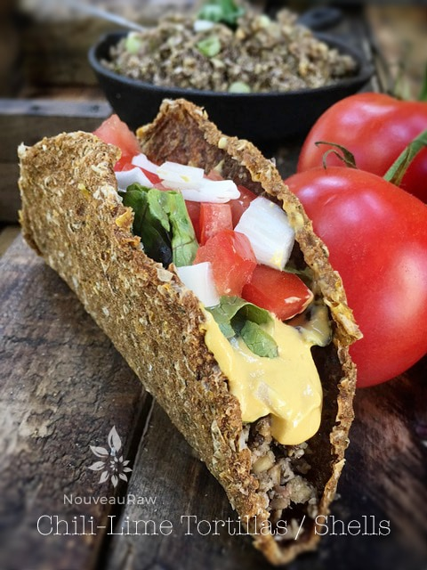
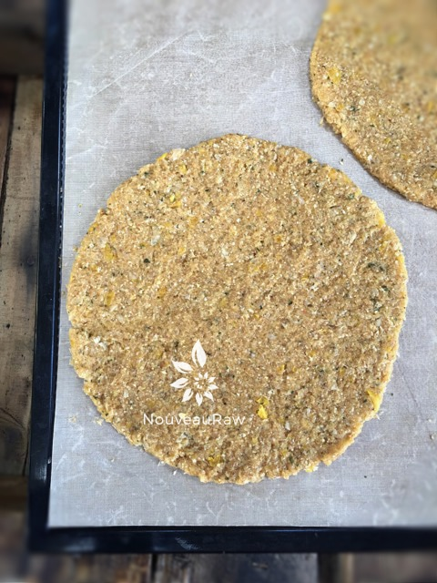
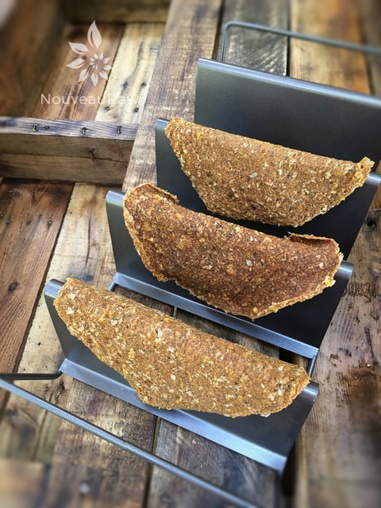
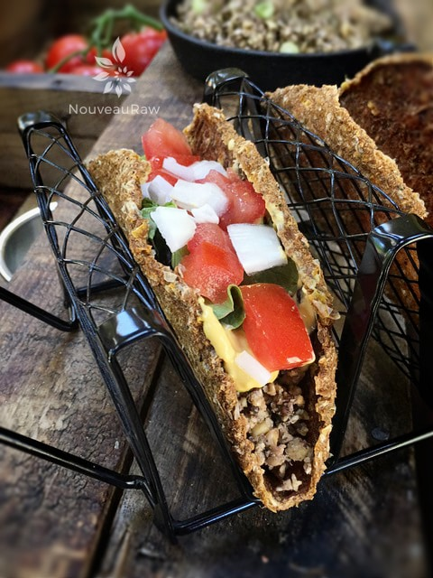

Chili-Lime Tortillas / Shells

~ raw, vegan, gluten-free, nut-free ~
Tacos are classic Mexican street food. And I am not going to be shy in stating that I wish the streets of Mexico ran through my house… that is how much I love Mexican food. I always thought that Mexican food made my mouth water, but that isn’t the case… it causes my mouth to cry tears of joy!
I will be honest; there is a little bit of a learning curve when it comes to successfully eating a raw taco. Raw taco shells obviously differ from the authentically cooked ones in terms of sturdiness, but there are ways around that.
First of all, I have learned to line the inside of the shell (whether soft or hard) with whole-leaf lettuce. This creates a barrier from the other ingredients that are more on the wet side, which can wreak havoc on a dehydrated shell.
Next, you don’t want to over-stuff the taco. This causes an avalanche of ingredients to spill out back onto the plate or worse yet… their lap.
Holding the taco… I like to get my whole hand in the game here. I do my best to cradle the base of the shell in the palm of one of my hands and gently pinch (press together) the two top edges with my other. Whether you decide to tilt the taco to take the bite or hold it upright and tilt your head… that is a personal choice. Me? I am a head tilter.
However, you decide to build, hold, and eat your taco… the ultimate goal here is to ENJOY it. An over-stuffed, crumbled taco tastes just as good – a bit messier – but still good. So, create your masterpiece, say a little prayer, and dive in without thoughts of turning back. After that first bite, you are fully committed. Hehe, I hope you enjoy this flavor-packed taco shell recipe. Many blessings, amie sue
- 3 cups organic corn
- 1/2 large onion
- 2 cups diced, yellow bell pepper
- 1/3 cup lime juice & zest
- 2-4 large cloves garlic or 1/2 tsp garlic powder
- 2 tsp chili powder
- 2 tsp ground cumin
- 1 tsp Himalayan pink salt
- 1/2 tsp cayenne powder
- 1/2 cup minced fresh cilantro
- 3/4 cup ground psyllium husk
Preparation:
- In a food processor, combine; corn, onion, bell pepper, lime, garlic, chili, cumin, salt, and cayenne. Process until almost smooth.
- Add cilantro and psyllium. Pulse together.
- Psyllium husks are a thickening agent in this recipe, and you want to add it last and blend briefly.
- If over blended it can get really gelled up.
- Click (here) to read a write up that I did on psyllium.
- Drop 1/2 cup of the dough onto the Teflex-lined dehydrator trays and spread to make a 6″ circle using an offset spatula.
- Dehydrate at 145 degrees (F) for 1 hour, then reduce to 115 degrees (F) for 3 to 4 hours.
- Flip the teflex sheets over onto the mesh sheet and carefully peel away the teflex. Place back in the dehydrator for about 2 hours.
- When the tortilla is completely dry on both sides but still pliable, remove it from the dehydrator and cool.
- Store in a plastic Zip-lock bag in the fridge. Will keep for several weeks. If your wraps get too stiff, spritz a little water on them, and they should soften right up for you.
Culinary Explanations:
- Why do I start the dehydrator at 145 degrees (F)? Click (here) to learn the reason behind this.
- When working with fresh ingredients, it is important to taste test as you build a recipe. Learn why (here).
- Don’t own a dehydrator? Learn how to use your oven (here). I do however truly believe that it is a worthwhile investment. Click (here) to learn what I use.

Spread the batter into a nice circular shape. Make them as big or as little as you want. Small ones are fun to make for appetizers or for the kiddos.

I am sorry that I missed taking a photo when I placed them on the taco shell holder (mold), but it was midnight when my eyes popped open while I was in deep slumber and remembered that I didn’t get my shells ready to be molded. So in my PJ’s and with the sand-man hot on my heals, I got up to do the next step. Basically, I took the round discs of taco shells (while still pliable enough), put a piece of plastic on them and then draped them over this taco shell mold (as seen above). Slid them back in the dehydrator and went back to bed. :) I wanted to show you what happens to the shells if you put the wet side of the shell, face up when placing them on the mold (see the middle shell). See how it curled, that is what happens. So make sure that you transfer the pliable shells, wet side down onto the mold. I hope that makes sense.

© AmieSue.com